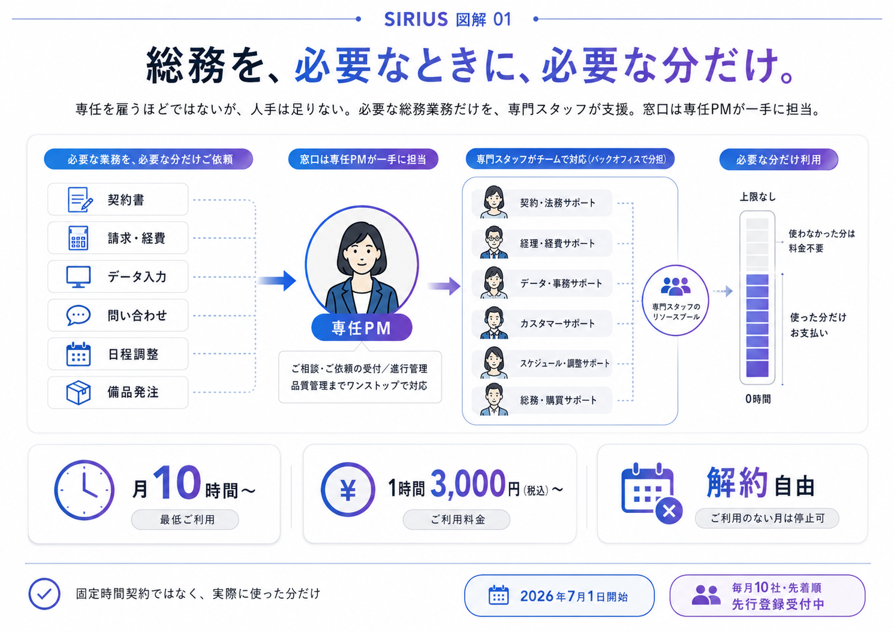

「専任を雇うほどではないが、人手は足りない」。そうした総務を、必要なときに必要な分だけ、専門のスタッフが支援いたします。多くの事務代行のように月あたりの利用時間を提供側の都合で固定することはなく、ご利用いただいた分だけのご負担です。窓口は専任のPM（プロジェクトマネージャー）が一手に引き受けます。
2026年7月1日にサービスを開始いたします。一社ずつ確実に導入を進めるため、毎月10社・先着順で先行登録を承っております。
契約書の作成、請求・経費の処理、データ入力、問い合わせ対応。専任を雇うほどの分量ではない一方で、放置もできません。こうした「名もなき総務」が、経営者や社員が本業に充てるべき時間を、少しずつ奪っていきます。
その積み重ねは、毎月およそ12.4万円の見えないコストとなるおそれがあります。※以下は、一定の前提に基づく当社試算です。
※前提：総務等の非コア業務を経営者や社員が兼務している状況を想定（中小企業庁「小規模企業白書」）。その作業時間を週5時間と当社が仮定した一例の試算です。時間単価は時間当たり労働生産性 5,720円／時（日本生産性本部「労働生産性の国際比較2025」）を用いています。
SIRIUSは、総務業務を固定された時間でまとめて引き受けるのではなく、お客様が実際に必要とされる作業を、必要な時間だけ支援いたします。その結果、社長も現場も、本業に集中できる時間を取り戻せます。
あらかじめ利用時間数を契約する方式です。その時間数は提供側の都合で決まりがちで、実際に必要な量と乖離することも少なくありません。
当社の都合で時間を固定することはありません。お客様の状況に合わせ、必要なときに必要な分だけご利用いただけます。ご利用のない月は、停止・解約も可能です。
業務の進め方を整理し、記録として残してまいりますので、外部への任せきりを避け、特定の担当者に依存せずとも安定して継続できます。こうして整備された状態が、貴社の内部に蓄積されていきます。
決まった手順をくり返す定型的な作業やデータの入力・転記、決まった形式の書類づくりや集計は、さまざまなツールやサービスの普及により、以前より少ない手間でこなせるようになりました。代わりに価値が高まっているのは、「いま何をすべきかを自分で考え、状況の変化に合わせて段取りする」仕事です。
「人手が足りない」という声は、あらゆる業種で聞かれます。しかし実態を精査すると、問題は単純な人数だけではありません。一方では定型作業から手が空いた社員がおり、他方では、インボイス制度や電子帳簿保存法といった新しい制度への対応、増加する問い合わせ対応など、その場の判断や専門的な知識が求められる仕事に人手が足りていません。データ入力を正確にこなせることと、込み入った問い合わせに的確に答えられることは、別の能力です。
人員の数は足りていても、必要なスキルが必要な場所に行き届かない。これが「社内の仕事とスキルの不一致（ミスマッチ）」です。
人員の数は足りているにもかかわらず、必要なスキルが、必要な場所に行き届いていない。この社内における業務とスキルの不一致こそ、多くの企業が抱える見えにくい停滞の要因であると当社は考えております。
この問題は、中小企業ほど深刻になりがちです。総務に専念できる担当者を雇う余裕がなく、一人が経理・労務・庶務まで幅広く抱え込みがちです。その結果、「その進め方は特定の担当者しか把握していない」という属人化が生じ、その担当者が離職・休職した途端に、業務が停止してしまいます。
その本質は、多くの企業が業務を「人」や「役職」に紐づけて抱えている点にあります。そのため近年、人と業務を「人」や「役職」ではなく「できること（スキル）」の単位でとらえ直す「スキルベース」という考え方が注目されています。
これまで総務は、一人の担当者にすべてを任せるのが一般的でした。しかし、総務の業務は複雑化・多様化し、求められる専門性も年々高まっております。こうしたなかで、幅広い業務のすべてをお一人の担当者が背負い続けることには、どうしても無理が生じます。特定の担当者に業務が偏る属人化のリスクも残ります。
請求書の作成から契約書の確認、データ入力、問い合わせ対応まで、幅広い業務を特定の“頼れる一人”に集約します。「その担当者しか把握していない」状態が生まれ、休職・離職により業務が停止します。
業務を小さなタスクに分け、それぞれ最も適した人材へ配置します。厚生労働省の公的基準に沿って標準化するため、担当が代わっても同一の品質を保ちます。

業務を「人」や「役職」ではなく「できること（スキル）」の単位でとらえ直す。この考え方を「スキルベース」と呼びます。総務の仕事を、短時間で完了する小さなタスク単位にまで細かく分解し（ユニット化）、各タスクにどのような“できること（スキル）”や遂行基準（コンピテンシー）が求められるかを、厚生労働省の公的指標「職業能力評価基準」に沿って見極めます。そのうえで、その作業を最も得意とする人材を割り当てる。一枚の絵を組み上げるジグソーパズルのように、チームで分担して仕上げてまいります。従来の「人に仕事を割り当てる（適材適所）」という発想を反転させ、まず作業を定め、その作業にふさわしい人材を配置する。この「適所適材」の考え方により、特定の一人への依存を解きほぐし、担当者の休職・離職があっても業務は停止いたしません。
SIRIUS（シリウス）は、夜空で最も明るい星の名であり、同時に当社が本サービスに込めた6つの設計思想の頭文字でもあります。その先頭にあるのが、サービスの根幹をなす「Skill-based（スキルベース）」です。
SIRIUSは、単なる業務代行にとどまらず、会社の経営基盤そのものを強くする仕組みでございます。次の3つを柱としております。
そしてスキルベースで業務と人を結びつけるうえで欠かせないのが、「スキルとは何か」を客観的に定義することです。基準が担当者ごとに異なれば、誰に任せるかによって品質が左右されてしまいます。そのためSIRIUSは、スキルを主観ではなく客観的な基準、すなわち厚生労働省が整備する公的指標「職業能力評価基準」に基づいてとらえます。公的な基準に沿って標準化することで、担当が代わっても同じ品質を保てる、再現性のある支援を目指します。
表示価格はすべて税込です。月々の固定費はなく、ご利用のない月は費用が発生いたしません。
SIRIUSは、ただ作業を代行し続けるためのサービスではありません。業務の進め方を整理し、記録に残していくことで、外部への任せきりを避け、いずれはお客様の企業がご自身で運用できる状態へ。その土台づくりを支えます。2026年7月1日に開始した総務アウトソーシング『SIRIUS』は、日本の企業、そして貴社が「自社で運用できる」状態を築くためのパートナーであり続けます。
SIRIUSは、マニュアルのない状態から、PMがお客様とともに業務を一つずつ整理し、記録に残しながら導入を進めます。この丁寧な導入に十分な時間を要するため、毎月お受けするのは10社までとしております。2026年7月1日のサービス開始後も、先行のご登録を承っております。
ご登録ありがとうございます。毎月10社の枠から、順にご案内いたします。ご依頼をご希望の業務が生じた際は、いつでもご相談ください。